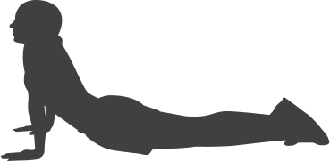

<!--
  Generated template for the M2pSub1Page page.

  See http://ionicframework.com/docs/components/#navigation for more info on
  Ionic pages and navigation.
-->
<ion-header color="dark">

  <ion-navbar color="dark">
    <ion-title>Movement Foundation</ion-title>
  </ion-navbar>

</ion-header>


<ion-content >
  <ion-list no-lines>

    <ion-list-header color="light">
      Injury History
    </ion-list-header>

    <ion-item color="pass" (click)="openModal({charNum: 0})">
      <ion-label>Injury History</ion-label>
      <ion-badge color="secondary" item-right>Pass</ion-badge>
      <div item-left text-center style="width: 30px;">
        
      </div>

    </ion-item>

    <ion-list-header color="light">
      Breathing Screen
    </ion-list-header>

    <ion-item>
      <ion-label>Questionnaire</ion-label>
      <ion-checkbox color="secondary" item-right checked="true"></ion-checkbox>
      <div item-left text-center style="width: 30px;">
        
      </div>

    </ion-item>

    <ion-item>
      <ion-label>Functional Residual Capacity</ion-label>
      <ion-checkbox color="secondary" item-right checked="true"></ion-checkbox>
      <div item-left text-center style="width: 30px;">
        
      </div>

    </ion-item>

    <ion-item>
      <ion-label>Total Lung Capacity</ion-label>
      <ion-checkbox color="secondary" item-right checked="true"></ion-checkbox>
      <div item-left text-center style="width: 30px;">
        
      </div>

    </ion-item>

    <ion-list-header color="light">
      Functional Movement Screen
    </ion-list-header>

    <ion-item>
      <ion-label>Extension Clearing Test</ion-label>
      <ion-checkbox color="secondary" item-right checked="true"></ion-checkbox>
      <div item-left text-center style="width: 30px;">
        
      </div>

    </ion-item>


  </ion-list>

</ion-content>
